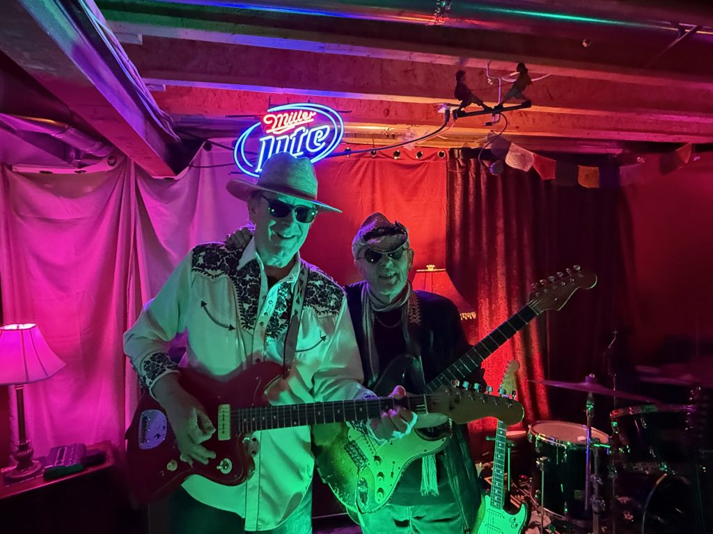

The Waupoos Barn Incident

BACKGROUND
The Waupoos Barn Incident is a Canadian band led by Russell Walker and Neil Chapman both known for their long history of musical projects in Toronto including New Regime and The Pukka Orchestra in the 80’s. The pair have written close to 100 film/TV scores together. See their latest video Horror Show: Elon and the Dictator, which addresses contemporary issues including the ‘Horror Show’ south of the Canadian border. Visit them on all streaming platforms.
CREDITS
Musicians implicated in The Waupoos Barn Incident may include Steve Heathcote: drums, Gary Craig: drums, Matt Horner: hammond and piano, Dennis Keldie: hammond, Tony Duggan-Smith: guitar, Leo Valvasorri: bass, Sandrine Charrier/Lee Whalen/Noah Walker: background vocals.